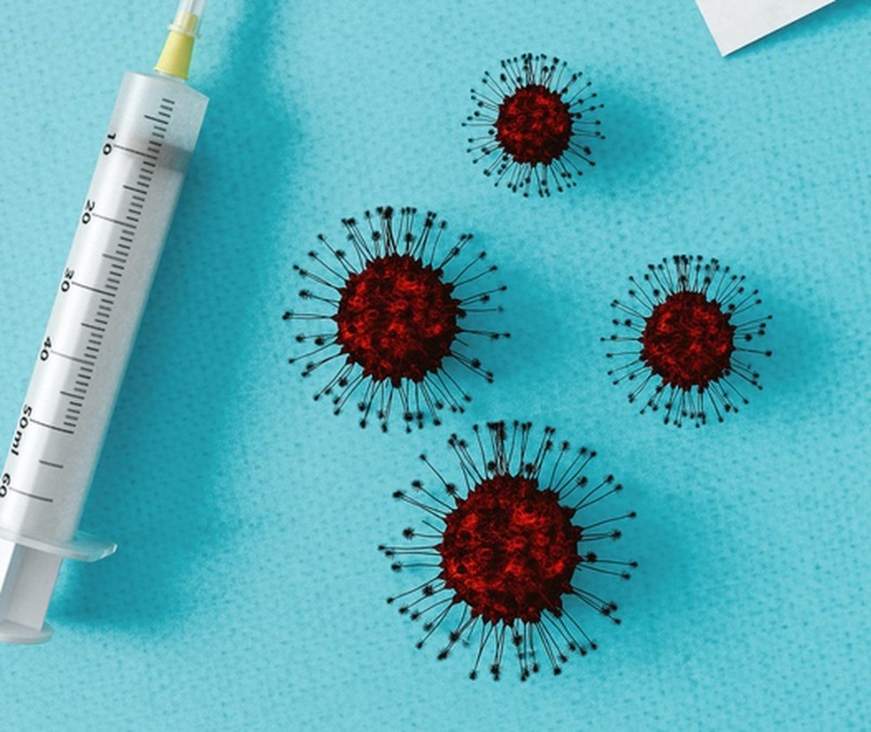
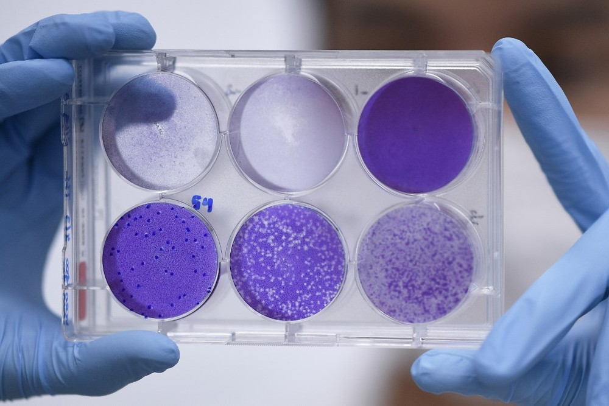
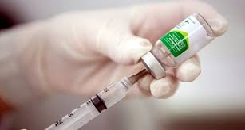
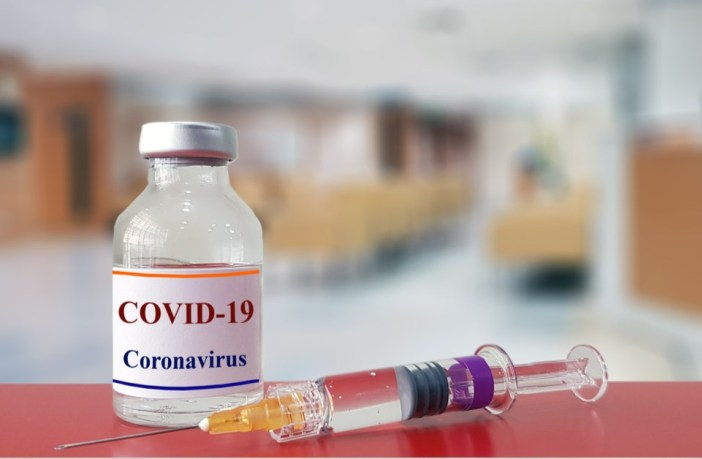

Solidariedade
Vacina
-

Vacina contra Covid-19 só deve chegar em 2021
-

China aprova início de testes de vacinas experimentais contra Covid-19
-

Fiocruz vai realizar estudo de vacina dupla contra o Covid-19 e influenza
-

Coronavírus: como o mundo desperdiçou a chance de produzir vacina para conter a pandemia
-

Johnson & Johnson anuncia candidata à vacina para COVID-19